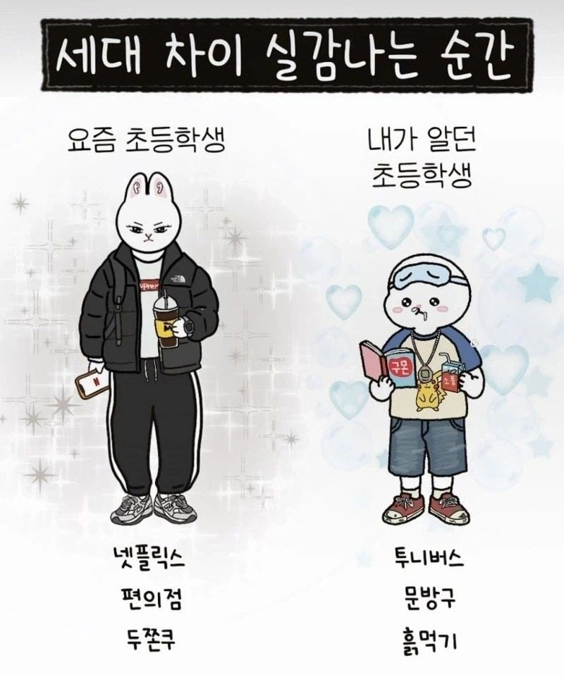

나 초6때 : 헤헤 장수풍뎅이..사슴벌레..메이플 던파 비엔나소시지 으흐흐
꼬지필 으흐흐
난 요즘도 반찬 비엔나 소시지 하는데...
비엔나 케찹으로 볶으면 맛있긴 해..나도 즐겨먹음
흙 맛있긴 헤
근데 웃긴게 정신연령 성숙도는 오른쪽 90년생 초딩들이 한참 앞서감 ㅋㅋㅋ 902000년대 초딩들 인터뷰영상보면 존내 또박정갈하게 말하는데 . 괜히 그시절 웅변학원 같은 사설교육 인기있던게아니더라.
또 생각해보면 방송사들 채널 게시판 옛날글좀 구경해보면 이게 5~6학년 애들이쓴글 맞는가 싶을정도로 왜이리 글 잘쓴거같냐 싶은글들 많긴함.
그러고보니 어렸을때 태권도장에서 웅변대회하고 그랬네 ㅋㅋㅋㅋ
드라마, 웹툰, sns 등 영향이 큰듯
무슨 초2를 그려놨어
옛날에는 저렇게하면 존나 맞았었거든 ㅋㅋ
우리 땐 BB탄총도 들고 있어야 됨 ㅋㅋㅋ
제일 체감 큰게 컴퓨터를 아예 안하더라 모든게 다 폰이나 태블릿임
초딩들 중딩들 옷은 마치 대학생처럼 입는데, 얼굴엔 젖살 남아있고 행동이나 사고방식 또한 그냥 초중딩임 ㅋㅋ
가장 큰게 돈을 진짜 잘 쓴다는거임 ㅋㅋ 중딩.고딩들이 오히려 돈을 아끼고 초딩들이 돈 존나 잘씀 ㅋㅋ
서양처럼 되는 건가
초등학교 6학년때 탑블레이드했는데
덩치는 왼쪽인데 하는 짓은 오른쪽임